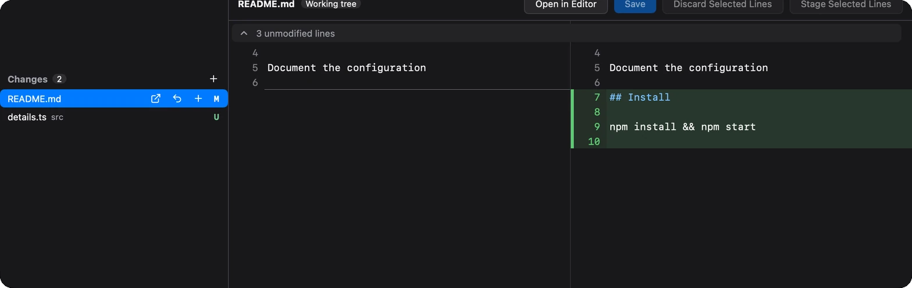
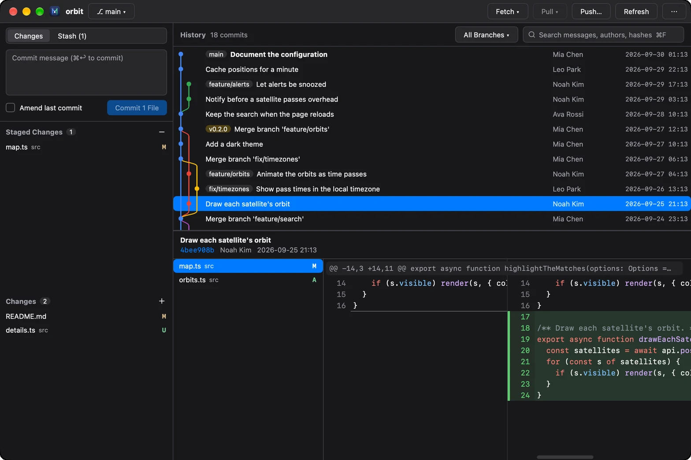
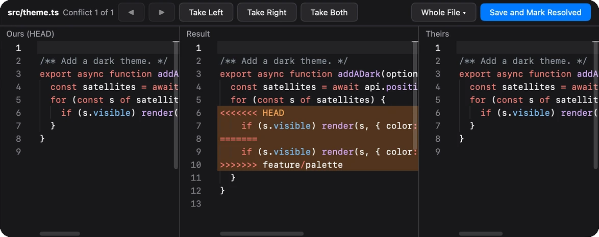
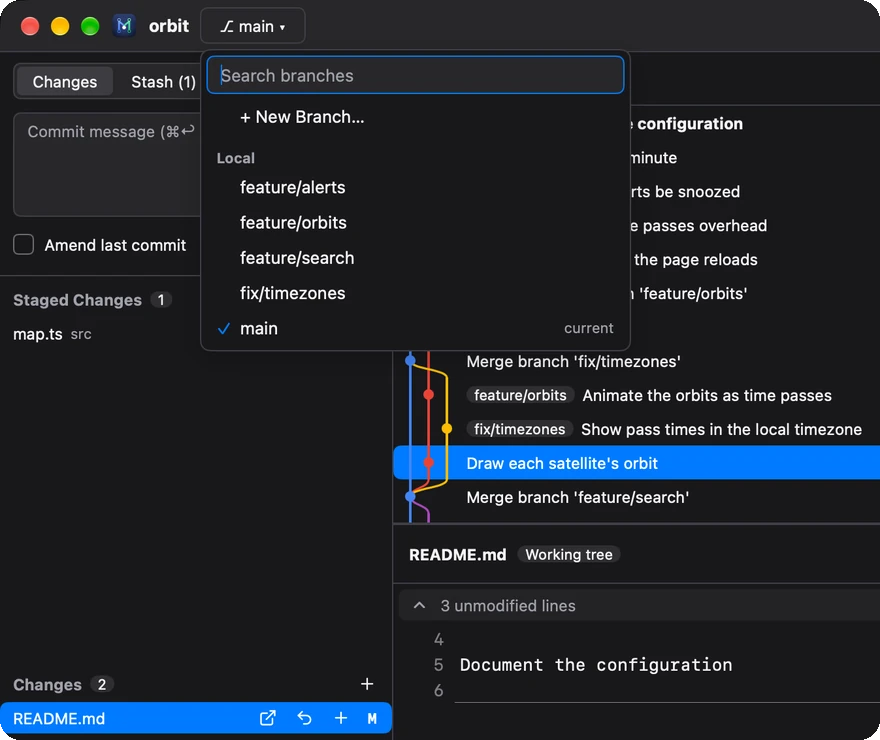
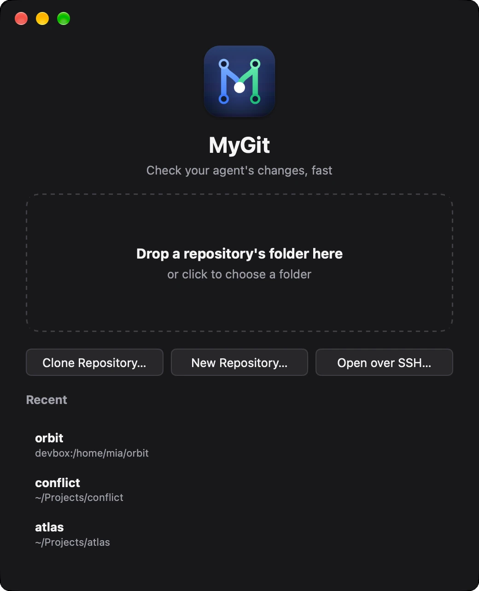

Stage what you mean.
Stage files, changes or single lines. A changed file shows whole, so you can fix a typo right in the diff and save — then stage just the lines you want.

mygit . in a terminal opens it in a moment, and it refreshes as the agent works. Stage what's right and commit, without waiting for an IDE — in a light, fast, modern git client with JetBrains' history tools and VS Code's way of staging.
macOS · Windows · Linux

Demo
Made for coding with agents
MyGit makes that quick. It reads the repository, not an agent's session, so it works the same with any agent, with several at once, and with your own edits.
Every change as it lands: the window refreshes while the agent works, each file side by side with syntax highlighting. Lockfiles and generated files fold away; pictures show before and after.
Fix a line right in the diff, stage the files, changes or lines that are right, and commit.
Comment on the lines to redo and copy the comments as Markdown, each with its file, lines and code, for Claude Code, Codex or a colleague.
Compared
git diff in a terminal
Side by side, generated files folded, refreshed as the agent works
Light, fast and modern
JetBrains' commit graph and history tools, VS Code's list of changes and way of staging, ⌘K for commands and ⌘P to go to a file, light and dark. Without the IDE: MyGit is one native binary, drawn on the GPU by MyGo — no webview, no JVM — so it opens right away.
Features
Stage files, changes or single lines. A changed file shows whole, so you can fix a typo right in the diff and save — then stage just the lines you want.

Ours, the result and theirs in three panes. Take a side or both, a conflict at a time, edit the result, and continue the merge, rebase or cherry-pick from the bar on top.

Search local and remote branches as you type. Switch, merge, rebase, compare, rename or delete from each one's menu — and interactively rebase from any commit.

Drop a folder on a window, clone, start a new repository, or run mygit . in a terminal. Each repository gets a window of its own.

logSearch the history by message, author or hash; filter by branch or pathdiffSide-by-side diffs with syntax highlighting; compare two commits with ⌘-clickrebase -iReorder, reword, squash, fixup or drop, by draggingstashStash with untracked files; apply, pop or branch from a stashblameWho changed each line, and a double-click to their commitpushPreview what a push sends; force with lease; sign-ins asked in the windowviewedGenerated files fold away, files marked viewed, pictures before and after, comments copied as Markdowngh prReview GitHub pull requests: threads under their lines, replies, and approvalsEverywhere
Install
Free and open source. It needs git on your PATH, and updates itself once installed.
Not notarized by Apple yet. If macOS won't open it, run xattr -dr com.apple.quarantine /Applications/MyGit.app
$ curl -fsSL https://github.com/Binaryify/MyGit/releases/latest/download/install.sh | sh
# installs in ~/.local, without rootCtrl in place of ⌘ on Windows and Linux.